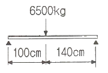
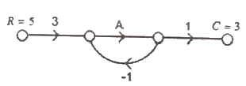
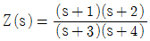
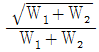
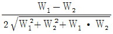
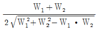
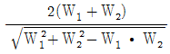
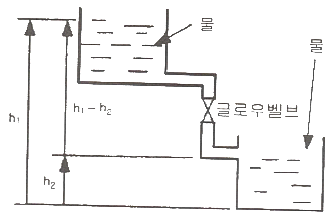
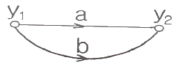
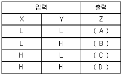

승강기산업기사 (2012-09-15 기출문제)
1과목: 승강기개론
1. 권상기, 전동기 및 제어반을 기계실 내의 기둥 및 벽으로부터 일정거리 만큼 이격시켜 설치하는 이유로 옳지 않은 것은?
- 제어반 후면의 점검 및 보수가 어렵기 때문에
- 수동핸들(Handle)의 수동조작을 할 수 없기 때문에
- 기계실 실내온도가 상승할 수 있기 때문에
- 권상기 및 브레이크의 점검 및 조정이 어렵기 때문에
(정답률: 80%)

2. 경사형 휠체어리프트에서 비상정지장치를 설치하지 않아도 되는 것은?
- 자기유지형 웜/세그먼트 드라이브 방식
- 간접식 유압잭 구동방식
- 전동모터로 구동되는 로프 견인식
- 전동모터로 구동되는 로프 드럼식
(정답률: 73%)
3. 엘리베이터 카용 유입식 완충기의 최소 적용중량[kgf]에 대한 설명으로 옳은 것은?
- 카 자중+65
- 카 자중+적재하중
- 카 자중+균형추 자중
- 균형추 자중
(정답률: 78%)
4. 속도가 60m/min인 엘리베이터의 비상정지장치가 작동하는 속도는 몇 [m/min] 이하이어야 하는가?(관련 규정 개정전 문제로 여기서는 기존 정답인 2번을 누르면 정답 처리됩니다. 자세한 내용은 해설을 참고하세요.)
- 78
- 84
- 96
- 108
(정답률: 77%)
5. 주로프에 사용되는 로프의 꼬임 방법 중 엘리베이터에 가장 많이 쓰이는 꼬임 방법은?
- 보통 Z 꼬임
- 보통 S 꼬임
- 랭 Z 꼬임
- 랭 S 꼬임
(정답률: 91%)
6. 엘리베이터에 사용되는 브레이크장치의 설명으로 옳은 것은?
- 승객용엘리베이터는 120%의 적재하중이 있는 상태에서 정격속도로 하강할 때 안전하게 감속 정지해야 한다.
- 화물용엘리베이터는 125%의 적재하중이 있는 상태에서 정격속도로 하강할 때 안전하게 감속 정지해야 한다.
- 승객용엘리베이터는 125%의 적재하중이 있는 상태에서 정격속도로 하강할 때 안전하게 감속 정지해야 한다.
- 화물용엘리베이터는 150%의 적재하중이 있는 상태에서 정격속도로 하강할 때 안전하게 감속 정지해야 한다.
(정답률: 87%)
7. 엘리베이터의 조작방식에 따른 분류 중 자동식이 아닌 것은?
- 단식자동식
- 하강승합 전자동식
- 승합 전자동식
- 키 스위치 방식
(정답률: 83%)
8. 엘리베이터의 정격적재하중이 1000kg, 정격속도가 120m/min, 오버밸런스율이 50%, 총효율이 80%인 경우 전동기 용량은 약 몇 [kW]가 필요한가?
- 9.3
- 10.3
- 11.3
- 12.3
(정답률: 68%)
9. 로핑에 대한 설명으로 맞는 것은?
- 1:1 로핑에서의 로프 장력은 카(또는 균형추)의 자체 중량과 같다.
- 2:1 로핑에서는 카 정격속도의 2배 속도로 로프가 구동한다.
- 2:1 이상의 로핑에 있어서 로프의 수명이 1:1에 비해 길어진다.
- 2:1 이상의 포링에 있어서 종합효율이 1:1에 비해 향상된다.
(정답률: 56%)
10. 카의 구조 중 카틀의 구성요소에 포함되지 않는 것은?
- 상부 체대
- 브레이스 로드(Brace Rod)
- 하부 체대
- 기계대
(정답률: 78%)
11. 유압엘리베이터에서 가장 많이 사용되는 펌프는 다음 중 어느 것인가?
- 기어 펌프
- 피스톤 펌프
- 벤 펌프
- 스크류 펌프
(정답률: 79%)
12. 공동주택용 엘리베이터에서 카가 정지하고 동력이 끊어졌을 때 카 도어를 손으로 개방하는데 필요한 힘은?
- 30kg 이하
- 5kg 이상 ~ 30kg 이하
- 10kg 이상 ~ 30kg 이하
- 30kg 이상
(정답률: 70%)
13. 다음 중 속도에 의하여 분류할 때 보통 중속도 엘리베이터에 해당되는 속도는?
- 45~90 m/min
- 60~1⑤ m/min
- 90~120 m/min
- 60~120 m/min
(정답률: 81%)
14. 카 바닥하부 또는 로프단말에 설치되는 과부하감지장치의 용도가 아닌 것은?
- 전기적인 제어용
- 군관리용
- 과하중 경보용
- 속도감지용
(정답률: 59%)
15. 카 틀 설계 시 고려해야 할 사항 중 맞지 않은 것은?
- 카 바닥과 카 틀의 외부 부재들은 강철 또는 금속을 적용해야 하며 주철은 허용되지 않는다.
- 카 바닥과 카 틀 연결 부위에 경사진 구조 부재를 적용시 사용되는 너트는 경사 와셔를 적용해야 한다.
- 브레이스 로드(Brace Ro)는 카 바닥(Platform) 하중의 3/8까지 카 틀의 상부에서 하부까지 전달되도록 한다.
- 상부체대(Top Beam)에 현수 도르래를 사용하는 경우 로프의 당김으로 발생하는 압축력은 고려하지 않아도 된다.
(정답률: 65%)
16. 기계실 없는 엘리베이터에서 승강장 도어 인터록 스위치 연결용 전선 단면적의 최소 기준은 얼마인가?
- 0.5 mm2
- 0.75 mm2
- 1.0 mm2
- 1.5 mm2
(정답률: 64%)
17. 엘리베이터의 안전장치에 대한 설명 중 틀린 것은?
- 정격속도 60m/min 이상에는 유입식 완충기가 적용되고 60m/min 이하에서는 주로 스프링 완충기가 적용된다.
- 긴급 상황 발생시 카를 정지시킬 때 정지스위치를 사용한다.
- 완충기의 행정거리를 증가시키기 위해서 사용되는 안전장치가 강제 감속장치이다.
- 록 다운 비상정지창치는 즉시작동형 비상정지장치를 주로 사용한다.
(정답률: 50%)
18. 보상체인의 설치가 필요한 이유는?
- 균형추의 낙하를 방지하기 위하여
- 카의 진동을 방지하기 위하여
- 케이블과 로프의 이동에 따른 하중을 보상하기 위하여
- 카 자체의 하중을 보상하기 위하여
(정답률: 81%)
19. 유압식 엘리베이터에서 작동유의 압력맥동을 흡수하여 진동 소음을 감소시키는 역할을 하는 것은?
- 체크밸브
- 필터
- 사이렌서
- 스트레이너
(정답률: 83%)
20. 교류귀환제어방식에서 역행 토크를 변화시키는 사이리스터와 다이오드의 연결방식은?
- 직렬
- 병렬
- 역병렬
- 역직렬
(정답률: 68%)
2과목: 승강기설계
21. 승강로의 구조에 대한 설명으로 옳지 않은 것은?
- 건축물에 설치하는 엘리베이터 승강로의 벽 및 개구부는 방화상 지장이 없는 구조로 한다.
- 승강로 상단은 콘크리트 및 철 구조물로 제작되어야 한다.
- 승강로 내부는 엘리베이터 승강에 지장이 없는 엘레비에터와 관련되지 않은 장치를 설치할 수 있다.
- 승장도어 내부에는 눈에 잘 띄는 위치에 적당한 크기의 승강로 층수가 표시되어야 한다.
(정답률: 83%)
22. 엘리베이터 조작방식에 대하여 틀린 것은?
- 승합 전자동식 : 진행방햐과 카버튼과 승강장버튼에 응답한다.
- 내리는 승합 전자동식 : 2층 이상의 승강장에는 내리는 방향의 버튼만 있다.
- 군 승합 자동식 : 교통수요의 변동에 대하여 운전내용이 변경된다.
- 군 관리방식 : 3~8대 병설시 합리적으로 운행관리하는 방식이다.
(정답률: 64%)
23. 건물용 용도별 교통수요 산출 및 수송능력 설정시 대규모 사무실 건물의 1인당 점유면적은 몇 m2/인 정도로 추정하는가?
- 4~5
- 7~8
- 9~10
- 10~11
(정답률: 64%)
24. 정격속도 90m/min 인 로프식 엘리베이터 카 꼭대기틈새 기준으로 적합한 것은?
- 1.8m 이상
- 1.6m 이상
- 1.4m 이상
- 1.2m 이상
(정답률: 54%)
25. 비사용 엘리베이터 구조로 잘못된 것은?
- 승강장 비상운전스위치는 터치버튼을 적용한다.
- 비상시 전원확보를 위하여 누전을 검출하는 경우에도 경보만 울리도록 한다.
- 승강장의 위치표시기는 전 층에 설치한다.
- 피트내 부착스위치 등은 방적조치를 하든가 비상운전시 분리되게 한다.
(정답률: 68%)
26. 기어의 장점을 설명한 것으로 틀린 것은?
- 강도가 크다.
- 높은 정밀도를 얻을 수 있다.
- 전동이 확실하다.
- 호환성이 나쁘다.
(정답률: 83%)
27. 경사각 30°, 층고 6M 이하인 건물에 설치하는 에스컬레이터의 속도규정은?
- 25m/min
- 30m/min
- 35m/min
- 40m/min
(정답률: 45%)
28. 적재하중 1000kg, 카자중 1500kg인 로프식 승용엘리베이터 카주(stile, upright)의 안전율은? (단, SS-400 강재사용, 단면적 13.3cm2, 인장강도는 4100kg/cm2이고, 양쪽에 1개씩 2본 사용하는 것으로 한다.)
- 10.9
- 21.8
- 43.6
- 87.2
(정답률: 27%)
29. 변압기 용량 산정시 전부하 상승전류에 대해서 비상용 엘리베이터일 경우 부등률은 얼마로 계산하여야 하는가?
- 0.85
- 0.9
- 0.95
- 1.0
(정답률: 72%)
30. 균형추에 비상정지 장치가 있는 경우 사용하지 않아야 하는 가이드 레일은?
- 5K
- 8K
- 13K
- 18K
(정답률: 80%)
31. 기계대에 그림과 같이 하중이 작용할 때 최대 굽힘모멘트는 몇 [kg·cm] 인가?

- 379117
- 379167
- 479227
- 479287
(정답률: 62%)
32. 엘리베이터에 있어서 대책을 요하는 재해의 종류로 볼 수 없는 것은?
- 고장
- 지진
- 화재
- 정전
(정답률: 83%)
33. 착상오차 이외에 감속도, 감속시의 저어크(감속도의 변화비율), 착상시간, 전력회생의 균형 등으로 인해 가장 많이 사용되는 2단 속도 전동기의 속도비는?
- 2:1
- 3:1
- 4:1
- 5:1
(정답률: 75%)
34. 카틀 및 카바닥을 설계할 때 카틀 및 카바닥에 작용하는 비상시 하중에 해당되지 않는 것은?
- 지진시 하중
- 적재중 하중비상정지
- 완충기 동작시 하중
- 장치 작동시 하중
(정답률: 59%)
35. 카 자중 3000kg, 적재하중 1500kg, 승강행정 20m, 로프 가닥수 6, 로프 중량 1kg/m 일 때 트랙션비는? (단, 오버밸런스율은 40%로 한다.)
- 빈 카가 최상층에서 하강시 : 1.044, 전부하 카가 최하층에서 상승시 : 1.190
- 빈 카가 최상층에서 하강시 : 1.154, 전부하 카가 최하층에서 상승시 : 1.210
- 빈 카가 최상층에서 하강시 : 1.180, 전부하 카가 최하층에서 상승시 : 1.190
- 빈 카가 최상층에서 하강시 : 1.240, 전부하 카가 최하층에서 상승시 : 1.283
(정답률: 65%)
36. 사이리스터의 좀호각을 바꿈으로서 승강기 속도를 제어하는 방식은?
- 정지 레오나드 방식
- 워드 레오나드 방식
- 교류 귀환 제어 방식
- 교류 2단 속도 제어 방식
(정답률: 58%)
37. 엘리베이터의 조명전원설비에 대한 설명으로 적합하지 않은 것은?
- 카 내의 조명용, 환기팬용 및 보수용 램프 등을 위한 전원설비이이다.
- 일반적으로 단상 교류 220V가 사용된다.
- 동력용 전원으로부터 인출하여 사용하는 것이 바람직하다.
- 자가발전설비가 가동될 때도 조명전원이 별도로 인가되도록 구성하는 것이 바람직하다.
(정답률: 76%)
38. 엘리베이터 배치와 구조에 관한 사항 중 틀린 것은?
- 8대의 그룹에서는 4대 4 배치가 가장 좋다.
- 4대의 그룹에서는 2대 2 배치가 가장 좋다.
- 6대의 그룹에서는 3대 3 배치가 가장 좋다.
- 3대의 그룹에서는 2대 1 배치가 가장 좋다.
(정답률: 76%)
39. 피치 2.5mm의 3중 나사가 1 회전하면 리드는 몇 mm가 되는가?
- 1/2.5
- 5
- 1/7.5
- 7.5
(정답률: 74%)
40. 다음 중 와이어로프에 의해 카가 움직이는 것은?
- 유압 간접식
- 유압 직접식
- 유압 팬더 그래프식
- 에스컬레이터
(정답률: 75%)
3과목: 일반기계공학
41. 축에 키 홈을 파지 않고 보스에만 키 홈을 파서 마찰에 의해 회전력을 전달시킬 수 있는 키는?
- 안장 키
- 접선 키
- 납작 키
- 반달 키
(정답률: 78%)
42. 원형축이 비틀림을 받고 있을 때 전단변형률에 대한 설명으로 옳은 것은?
- 축 중심으로부터의 반경방향 거리에 반비례한다.
- 축 중심으로부터의 반경방향 거리에 비례한다.
- 축 중심으로부터의 반경방향 거리의 제곱에 반비례한다.
- 축 중심으로부터의 반경방향 거리의 제곱에 비례한다.
(정답률: 53%)
43. 유압장치에서 배관, 밸브, 계기류를 급격한 서지압으로부터 보호하기 위하여 설치하는 것은?
- 액추에이터
- 디퓨저
- 어큐물레이터
- 엑셀레이터
(정답률: 71%)
44. 일명 드로잉(drawing)이라고도 하며 소재를 다이 구멍에 통과시켜 봉재, 선재, 관재 등을 가공하는 방법은?
- 단조
- 압연
- 인발
- 전단
(정답률: 71%)
45. 양단을 완전히 고정한 0℃의 구리봉에 온도를 50℃로 높였을 때 봉의 내부에 생기는 압축 응력은 약 몇 N/mm2인가? (단, 구리 봉의 세로 탄성계수는 9100N/mm2, 선팽창계수는 0.000016/℃이다.)
- 10.23
- 6.28
- 8.58
- 7.28
(정답률: 52%)
46. 유압회로에서 유압 모터, 유압실린더 등의 작동순설르 순차적으로 제어하고자 할 때 사용하는 밸브는?
- 체크 밸브
- 릴리프 밸브
- 시퀀스 밸브
- 감압 밸브
(정답률: 86%)
47. 운전 중 또는 정지 중에 축이음에 의한 회전력 전달을 자유롭게 단속할 수 있는 축 이음은 어떤 것인가?
- 유니버셜 조인트
- 브레이크
- 클러치
- 스핀들
(정답률: 73%)
48. 각도측정기로 사용되는 사인바는 일정 각도 이상을 측정하면 오차가 커지는데, 따라서 일반적으로 몇 ° 이하에서 사용하는 것이 좋은가?
- 30°
- 45°
- 60°
- 75°
(정답률: 71%)
49. 용융금속을 금속주형에 고속, 고압으로 주입하여, 정밀도가 높은 알루미늄 합금 주물을 다량 생산하고자 할 때 가장 적합한 주조방법은?
- 칠드 주조
- 원심 주조법
- 다이캐스팅
- 셀 주조
(정답률: 84%)
50. 연삭숫돌은 연삭이 계속 진행되면서 자동적으로 입자가 탈락되면서 새로운 예리한 입자에 의해 연삭이 진행하게 되는데 이 현상을 무엇이라 하는가?
- 자생작용
- 트루잉
- 글레이징
- 드레싱
(정답률: 75%)
51. 펠톤수차에서 비상시에 회전차에 작용하는 물의 방향을 급속히 돌리기 위한 장치는?
- 디플렉터
- 노즐
- 니들밸브
- 버킷
(정답률: 63%)
52. 인장 시험에서 측정할 수 없는 것은?
- 인장강도
- 탄성계수
- 연신율
- 경도
(정답률: 61%)
53. 로프 전동에 관한 특징 설명으로 올바른 것은?
- 축간거리가 짧은 경우에만 적합하다.
- 끊어질 경우에는 수리가 곤란하다.
- 전동 경로가 직선이어야만 한다.
- 기어와 비교할 때 정확한 속도비로 전달이 가능하다.
(정답률: 66%)
54. 보가 굽힘 모멘트를 받았을 때, 곡률 반경에 대한 설명으로 옳은 것은?
- 굽힘모멘트와 보의 세로탄성계수에 비례한다.
- 굽힘모멘트에 비례하고, 보의 세로탄성계수에 반비례한다.
- 굽힘모멘트에 비례하고, 보의 세로탄성계수에 비례한다.
- 굽힘모멘트와 보의 세로탄성계수에 반비례한다.
(정답률: 49%)
55. 압축 코일 스프링에서 유효 감김수만을 2배로 하면 동일 축하중에 대하여 처짐은 몇 배가 되는가? (단, 다른 조건은 동일하다고 가정한다.)
- 2
- 4
- 8
- 16
(정답률: 52%)
56. 다음 중 마그네슘의 특징에 관한 설명으로 틀린 것은?
- 비중이 알루미늄보다 작다.
- 조밀육방격자이며 고온에서 발화하기 쉽다.
- 대기중에서 내식성이 양호하나 산에는 침식되기 쉽다.
- 냉간 가공성이 우수한 편이다.
(정답률: 60%)
57. 피치 12.57mm, 모듈 4mm, 피치원 ㅣ름 128mm 인 스퍼기어의 잇수는 몇 개인가?
- 10
- 20
- 32
- 64
(정답률: 59%)
58. 탄소강을 오스테나이트조직으로 한 후 물속에 급랭하여 나타나는 침상조직으로 열처리 조직 중 경도가 최대이며, 부식에 대한 저항이 크고 강자성체이며, 경도와 강도는 크나 취성이 큰 조직은?
- 마테자이트
- 소르바이트
- 트루스타이트
- 펄라이트
(정답률: 78%)
59. 판금 가공(sheet matal working)의 종류에 해당되지 않는 것은?
- 단조 가공
- 접합 가공
- 성형 가공
- 전단 가공
(정답률: 48%)
60. 알루미늄에 Cu, Ni, Mg 원소를 첨가하여 만든 알루미늄 합금으로 내열성이 우수하고 고온강도가 크므로, 내연기관의 피스톤이나 실린더 헤드로 많이 사용하는 합금은?
- Y합금
- 듀랄루민
- 실루민
- 톰백
(정답률: 60%)
4과목: 전기제어공학
61. 정지형 워드-레오나드방식의 설명으로 거리가 먼 것은?
- 사이리스터의 점호각으로 속도를 조절한다.
- 항상 직류 발전기를 사용한다.
- 직류 전동기 속도제어의 방법이다.
- AC를 DC로 변환하는 컨버터가 있다.
(정답률: 58%)
62. 직류 전동기의 속도제어 방법이 아닌 것은?
- 계자 제어
- 저항 제어
- 발전 제어
- 전압 제어
(정답률: 59%)
63. 배리스터의 주된 용도는?
- 서지전압에 대한 히로 보호용
- 온도 측정용
- 출력전류 조절용
- 전압 증폭용
(정답률: 77%)
64. 목표값이 시간에 대하여 변화하지 않는 제어로 정전압 장치나 일정 속도제어 등에 해당하는 제어는?
- 프로그램제어
- 추종제어
- 정치제어
- 비율제어
(정답률: 65%)
65. 다음의 신호흐름선도의 입력이 5일 때 출력이 3이 되기 위한 A의 값은?

- 2
- 3
- 4
- 5
(정답률: 44%)
66. 2단자 임피던스 함수

에서 영점과 극점은?- 영점 : 1,2, 극점 : 3,4
- 영점 : 3,4, 극점 : 1,2
- 영점 : -1,-2, 극점 : -3,-4
- 영점 : -3,-4, 극점 : -1,-2
(정답률: 64%)
67. 2대의 전력계를 사용하여 평형부하의 3상회로의 역률을 측정하려고 한다. 전력계의 지시가 각각 W1, W2 라 할 때 이 회로의 역률은?




(정답률: 64%)
68. 다음 그림과 같이 수조 두개을 유량을 조절할 수 있는 글로우밸브가 있는 관으로 연결했다. 이때 각 부분을 전기의 용어와 대응시켰을 때 가장 적절한 것은?

- 수위차 : 기전력, 물 : 전류, 밸브 : 가변저항
- 수위차 : 기전력, 물 : 전압, 밸브 : 가변저항
- 수위차 : 전류, 물 : 전압, 밸브 : 가변저항
- 수위차 : 전압, 물 : 전류, 밸브 : 콘덴서
(정답률: 65%)
69. 그림과 같은 신호흐름선도의 선형방정식은?

- y2=(a+2b)y1
- y2=(a+b)y1
- y2=(2a+b)y1
- y2=2(a+b)y1
(정답률: 59%)
70. 다음 중 온도보상용으로 사용되는 것은?
- 다이오드
- 다이액
- 서미스터
- SCR
(정답률: 74%)
71. NAND 논리소자에 대한 진리표의 출력을 A에서 D까지 옳게 표현한 것은? (단, L은 Low 이고, H는 High 이다.)

- A = L, B = H, C = H, D = H
- A = L, B = L, C = H, D = H
- A = H, B = H, C = H, D = L
- A = L, B = L, C = L, D = H
(정답률: 59%)
72. “옴의 법칙”에 대한 설명으로 옳은 것은?
- 전압은 전류에 비례한다.
- 전압은 전류의 2승에 비례한다.
- 전압은 전류에 반비례한다.
- 전압은 저항에 반비례한다.
(정답률: 71%)
73. 인덕턴스 20[H]인 코일에 50[Hz], 200[V]인 교류전압을 인가하였을 때 이 회로에 흐르는 전류는 몇 [A] 인가?
- 1/10π
- π/10
- π
- 10π
(정답률: 45%)
74. AC서보 전동기에 대한 설명으로 틀린 것은?
- 큰 회전력이 요구되지 않는 계에 사용되는 전동기이다.
- 고정자의 기준 권선에는 정전압을 인가하며, 제어권선에는 제어용 전압을 인가한다.
- 속도 회전력 특성을 선형화하고 제어전압을 입력으로 회전자의 회전각을 출력으로 보았을 때 이 전동기의 전달함수는 미분요소와 2차요소의 직렬 결합으로 볼 수 있다.
- 기준권선과 제어권선의 두 고정자 권선이 있으며, 90도의 위상차가 있는 2상 전압을 인가하여 회전자계를 만든다.
(정답률: 57%)
75. 100[V]용 1[kW]의 전열기를 90[V]로 사용할 때의 전력은?
- 810
- 900
- 950
- 990
(정답률: 48%)
76. 5[μF]의 콘덴서에 100[V]의 직류전압을 가하면 축적되는 전하는 몇 [C] 인가?
- 5×10-2
- 5×10-3
- 5×10-4
- 5×10-5
(정답률: 57%)
77. 시퀀스 제어에 관한 설명 중 옳지 않은 것은?
- 조합 논리회로도 사용된다.
- 시간 지연요소도 사용된다.
- 유접점 계전기만 사용된다.
- 제어결과에 따라 조작이 자동적으로 이행된다.
(정답률: 73%)
78. 전동기 용량이 5~15[kW]일 경우 가장 적당한 유도전동기 기동방법은?
- 전전압기동법
- Y-△ 기동법
- 리액터기동법
- 기동보상기법
(정답률: 63%)
79. 변압기에서 권선에 부하전류가 흐를 때 누설자속이 증가하여 권선, 철심을 통하여 그 곳에 생기는 와전류에 의해 발생하는 손실은?
- 표류부하손
- 와전류손
- 히스테리시스손
- 철손
(정답률: 52%)
80. 피드백 제어계에서 주궤환 신호를 설명한 것은?
- 목표 값에 비례하는 기준 입력 신호를 발생하는 요소의 신호
- 제어량에서 주궤환을 생성하는 요소의 신호
- 제어량의 값을 목표 값과 비교하여 동작 신호를 얻기 위해 궤환되는 신호
- 제어계를 동작시키는 기준으로 목표값에 비례하는 신호
(정답률: 71%)